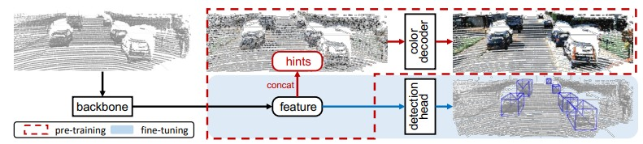
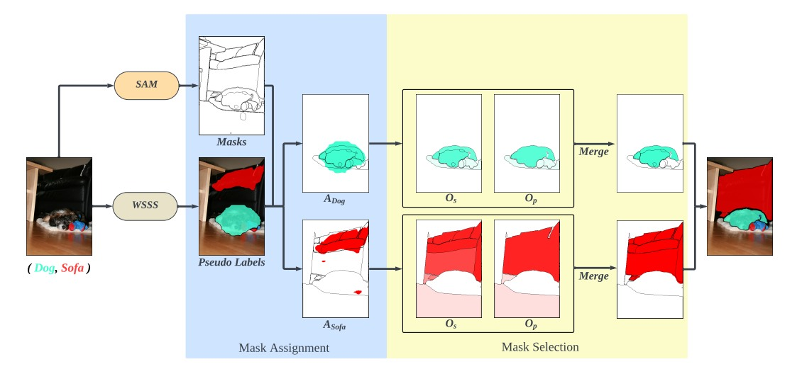
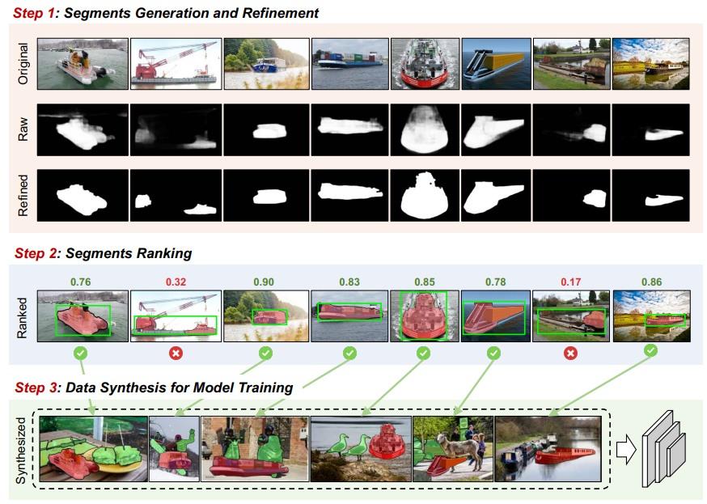

Multimodal Reasoning & Integration
How do multimodal models decide which evidence to trust? I study whether MLLMs truly integrate complementary modalities — or over-rely on the most dominant or misleading signal.
Ph.D. Student · Computer Science · Boston University
I study how AI systems perceive, reason, and decide — building models that are more robust, reliable, and worthy of trust.
01 — About
I'm a Ph.D. student in Computer Science at Boston University, advised by Prof. Deepti Ghadiyaram in the Image & Video Computing Group. My research focuses on multimodal large language models, vision-language reasoning, robustness, uncertainty quantification, interpretability, and generative AI.
My recent work studies how multimodal models integrate conflicting information across different modalities — revealing modality biases and vulnerabilities such as cross-modal attacks. More broadly, I want to understand when models rely on the right evidence, how their attention and uncertainty reflect reasoning, and how training and evaluation can make these systems more faithful and reliable.
Previously I earned B.S. degrees in Mathematics and Computer Science from The Ohio State University, where I worked on weakly supervised segmentation, long-tailed recognition, LiDAR-based 3D detection, wildfire segmentation, and multimodal video synthesis. My work has appeared at ECCV, ICLR, CVPR, and NeurIPS venues. This summer I'll be a Research Intern at Google Research.
Building multimodal AI that knows what evidence to trust.
02 — Research
Diagnosing and improving how multimodal models allocate attention, estimate uncertainty, and integrate evidence across modalities.
How do multimodal models decide which evidence to trust? I study whether MLLMs truly integrate complementary modalities — or over-rely on the most dominant or misleading signal.
Seemingly natural cues — on-screen text, captions, or textual prompts — can mislead multimodal models even when the correct evidence is present. I study these attacks and their safety implications.
Using attention shifts, attribution, and log-probability diagnostics, I ask whether a model's internal evidence allocation explains when it succeeds, fails, or becomes overconfident.
Multimodal models should know not only what answer to give, but also when the evidence is insufficient, conflicting, or unreliable.
I improve text-to-image models' ability to represent fine-grained physical states — open, closed, full, broken, folded, or melted — via synthetic data and targeted fine-tuning.
Earlier work building technical breadth: weakly supervised segmentation, long-tailed recognition, LiDAR 3D detection, wildfire segmentation, and topological losses.
Long-horizon agents sometimes repeat actions without making progress. DeLoop learns from those failures to reduce unproductive repetition.
Controlled audio-video-text conflict benchmarks reveal that MLLMs exhibit strong modality biases rather than balanced multimodal reasoning.
Semantic distractors injected through speech, on-screen text, and prompts can mislead audio-visual models even when correct evidence is present.
A benchmark of human-labeled samples and synthetic perturbations to evaluate modality-specific uncertainty, calibration, and reliability in VLMs.
An automatic synthetic-data pipeline and fine-tuning improve GenAI-Bench by 8.2% and two new object-state datasets by 17% / 24%.
A multimodal benchmark probing reasoning over electrical and electronics engineering problems.

Colorization as a pretext task for self-supervised pre-training of LiDAR 3D detectors in autonomous driving.


Mines free object segments from web images and ranks high-quality masks to improve long-tailed instance segmentation.
Extracts, centralizes, and pastes refined fire clusters to combat label scarcity and class imbalance in drone-based fire segmentation.
No publications in this category yet.
04 — Experience
San Francisco Bay Area, CA
Robust multimodal LLMs — multimodal reasoning, evidence allocation, counterfactual evidence construction, and model behavior under conflicting or misleading cues. Exploring attention-aware supervision and self-distillation for better multimodal grounding.
Boston, MA · Advisor: Dr. Deepti Ghadiyaram
Multimodal LLMs, vision-language reasoning, robustness, uncertainty, and generative AI: cross-modal conflict benchmarks, adversarial attacks, object-state generation, and modality-specific uncertainty.
Columbus, OH · Advisor: Dr. Wei-Lun Chao
Weakly supervised segmentation with SAM, LiDAR-based 3D detection pre-training, long-tailed instance segmentation, and sensor-adaptation pipelines for 3D detection.
Columbus, OH · Advisor: Dr. Mrinal Kumar
Semantic segmentation and data augmentation for wildland fire imagery, improving drone-based fire-monitoring perception.
Columbus, OH · Advisor: Dr. Arnab Nandi
Multimodal short-form video synthesis from papers and talks using PDF parsing, vision, speech-to-text, and LLMs. Most Innovative Project, HackOHI/O.
05 — Teaching
Boston University · Spring 2025
Delivered lectures, led labs, and mentored students on routing, transport protocols, latency, and congestion control.
The Ohio State University · 2020–2024
Intro to Programming in Java; Foundations I: Discrete Structures.
I enjoy connecting formal concepts with intuitive examples, visual explanations, and hands-on implementation.
06 — Service & Honors
CVPRICCV ICLRAAAI WACVCOLM TCSVTIJCV
Oct 2024 – Aug 2025
Organized AIR Seminar programming and academic events.
Dean's List (all attended semesters) · HackOHI/O 11 Most Innovative Project Award.
07 — Toolkit
Multimodal LLMs · Vision-Language Reasoning · Robustness & Safety · Uncertainty Quantification · Interpretability · Generative AI · Semantic Segmentation · 3D Detection
PyTorch · TensorFlow · Hugging Face Transformers · OpenCLIP/CLIP · Qwen-VL/Qwen-Omni · LLaVA-style models · Gemini APIs · WandB · Docker · Git · AWS S3
Python · MATLAB · Java · C · R · SQL · LaTeX
Get in touch
Open to research collaborations, reviewing, and conversations about trustworthy multimodal systems.